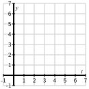
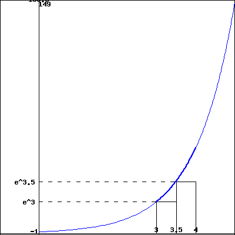

Section7.2Qualitative behavior of solutions to DEs
Motivating Questions
What is a slope field?
How can we use a slope field to obtain qualitative information about the solutions of a differential equation?
What are stable and unstable equilibrium solutions of an autonomous differential equation?
In earlier work, we have used the tangent line to the graph of a function \(f\) at a point \(a\) to approximate the values of \(f\) near \(a\text{.}\) The usefulness of this approximation is that we need to know very little about the function; armed with only the value \(f(a)\) and the derivative \(f'(a)\text{,}\) we may find the equation of the tangent line and the approximation
Remember that a first-order differential equation gives us information about the derivative of an unknown function. Since the derivative at a point tells us the slope of the tangent line at this point, a differential equation gives us crucial information about the tangent lines to the graph of a solution. We will use this information about the tangent lines to create a slope field for the differential equation, which enables us to sketch solutions to initial value problems. Our aim will be to understand the solutions qualitatively. That is, we would like to understand the basic nature of solutions, such as their long-range behavior, without precisely determining the value of a solution at a particular point.
Use the differential equation to find the slope of the tangent line to the solution \(y(t)\) at \(t=0\text{.}\) Then use the initial value to find the equation of the tangent line at \(t=0\text{.}\) Sketch this tangent line over the interval \(-0.25 \leq t \leq 0.25\) on the axes provided in Figure 7.2.1.
Figure7.2.1.Grid for plotting partial tangent lines.
Also shown in Figure 7.2.1 are the tangent lines to the solution \(y(t)\) at the points \(t=1, 2\text{,}\) and \(3\) (we will see how to find these later). Use the graph to measure the slope of each tangent line and verify that each agrees with the value specified by the differential equation.
Using these tangent lines as a guide, sketch a graph of the solution \(y(t)\) over the interval \(0\leq t\leq 3\) so that the lines are tangent to the graph of \(y(t)\text{.}\)
Use the Fundamental Theorem of Calculus to find \(y(t)\text{,}\) the solution to this initial value problem.
Graph the solution you found in (d) on the axes provided, and compare it to the sketch you made using the tangent lines.
Subsection7.2.1Slope fields
Preview Activity 7.2.1 shows that we can sketch the solution to an initial value problem if we know an appropriate collection of tangent lines. We can use the differential equation to find the slope of the tangent line at any point of interest, and hence plot such a collection.
Let's continue looking at the differential equation \(\frac{dy}{dt} = t-2\text{.}\) If \(t=0\text{,}\) this equation says that \(dy/dt = 0-2=-2\text{.}\) Note that this value holds regardless of the value of \(y\text{.}\) We will therefore sketch tangent lines for several values of \(y\) and \(t=0\) with a slope of \(-2\text{,}\) as shown in Figure 7.2.2.
Figure7.2.2.Tangent lines at points with \(t=0\text{.}\)
Figure7.2.3.Adding tangent lines at points with \(t=1\text{.}\)
Let's continue in the same way: if \(t=1\text{,}\) the differential equation tells us that \(dy/dt = 1-2=-1\text{,}\) and this holds regardless of the value of \(y\text{.}\) We now sketch tangent lines for several values of \(y\) and \(t=1\) with a slope of \(-1\) in Figure 7.2.3.
Similarly, we see that when \(t=2\text{,}\)\(dy/dt = 0\) and when \(t=3\text{,}\)\(dy/dt=1\text{.}\) We may therefore add to our growing collection of tangent line plots to achieve Figure 7.2.4.
Figure7.2.4.Adding tangent lines at points with \(t=2\) and \(t=3\text{.}\)
Figure7.2.5.A completed slope field.
In Figure 7.2.4, we begin to see the solutions to the differential equation emerge. For the sake of even greater clarity, we add more tangent lines to provide the more complete picture shown at right in Figure 7.2.5.
Figure 7.2.5 is called a slope field for the differential equation. It allows us to sketch solutions just as we did in the preview activity. We can begin with the initial value \(y(0) = 1\) and start sketching the solution by following the tangent line. Whenever the solution passes through a point at which a tangent line is drawn, that line is tangent to the solution. This principle leads us to the sequence of images in Figure 7.2.6.
Figure7.2.6.A sequence of images that show how to sketch the IVP solution that satisfies \(y(0)=1\text{.}\)
In fact, we can draw solutions for any initial value. Figure 7.2.7 shows solutions for several different initial values for \(y(0)\text{.}\)
Figure7.2.7.Different solutions to \(\frac{dy}{dt} = t-2\) that correspond to different initial values.
Just as we did for the equation \(\frac{dy}{dt} = t-2\text{,}\) we can construct a slope field for any differential equation of interest. The slope field provides us with visual information about how we expect solutions to the differential equation to behave.
Make a plot of \(\frac{dy}{dt}\) versus \(y\) on the axes provided in Figure 7.2.8. Looking at the graph, for what values of \(y\) does \(y\) increase and for what values of \(y\) does \(y\) decrease?
Figure7.2.8.Axes for plotting \(\frac{dy}{dt}\) versus \(y\text{.}\)
Figure7.2.9.Axes for plotting the slope field for \(\frac{dy}{dt} = -\frac 12( y - 4)\text{.}\)
Next, sketch the slope field for this differential equation on the axes provided in Figure 7.2.9.
Use your work in (b) to sketch (on the same axes in Figure 7.2.9.) solutions that satisfy \(y(0) = 0\text{,}\)\(y(0) = 2\text{,}\)\(y(0) = 4\) and \(y(0) = 6\text{.}\)
Verify that \(y(t) = 4 + 2e^{-t/2}\) is a solution to the given differential equation with the initial value \(y(0) = 6\text{.}\) Compare its graph to the one you sketched in (c).
What is special about the solution where \(y(0) = 4\text{?}\)
Subsection7.2.2Equilibrium solutions and stability
As our work in Activity 7.2.2 demonstrates, first-order autonomous equations may have solutions that are constant. These are simple to detect by inspecting the differential equation \(dy/dt = f(y)\text{:}\) constant solutions necessarily have a zero derivative, so \(dy/dt = 0 = f(y)\text{.}\)
For example, in Activity 7.2.2, we considered the equation \(\frac{dy}{dt} = f(y)=-\frac12(y-4)\text{.}\) Constant solutions are found by setting \(f(y) = -\frac12(y-4) = 0\text{,}\) which we immediately see implies that \(y = 4\text{.}\)
Values of \(y\) for which \(f(y) = 0\) in an autonomous differential equation \(\frac{dy}{dt} = f(y)\) are called equilibrium solutions of the differential equation.
Make a plot of \(\frac{dy}{dt}\) versus \(y\) on the axes provided in Figure 7.2.10. Looking at the graph, for what values of \(y\) does \(y\) increase and for what values of \(y\) does \(y\) decrease?
Figure7.2.10.Axes for plotting \(dy/dt\) vs \(y\) for \(\frac{dy}{dt} = -\frac 12 y(y-4)\text{.}\)
Figure7.2.11.Axes for plotting the slope field for \(\frac{dy}{dt} = -\frac 12 y(y-4)\text{.}\)
Identify any equilibrium solutions of the given differential equation.
Now sketch the slope field for the given differential equation on the axes provided in Figure 7.2.11.
Sketch the solutions to the given differential equation that correspond to initial values \(y(0)=-1, 0, 1, \ldots, 5\text{.}\)
An equilibrium solution \(\overline{y}\) is called stable if nearby solutions converge to \(\overline{y}\text{.}\) This means that if the initial condition varies slightly from \(\overline{y}\text{,}\) then \(\lim_{t\to\infty}y(t) = \overline{y}\text{.}\) Conversely, an equilibrium solution \(\overline{y}\) is called unstable if nearby solutions are pushed away from \(\overline{y}\text{.}\) Using your work above, classify the equilibrium solutions you found in (b) as either stable or unstable.
Suppose that \(y(t)\) describes the population of a species of living organisms and that the initial value \(y(0)\) is positive. What can you say about the eventual fate of this population?
Now consider a general autonomous differential equation of the form \(dy/dt = f(y)\text{.}\) Remember that an equilibrium solution \(\overline{y}\) satisfies \(f(\overline{y}) = 0\text{.}\) If we graph \(dy/dt = f(y)\) as a function of \(y\text{,}\) for which of the differential equations represented in Figure 7.2.12 and Figure 7.2.13 is \(\overline{y}\) a stable equilibrium and for which is \(\overline{y}\) unstable? Why?
Figure7.2.12.Plot of \(\frac{dy}{dt}\) as a function of \(y\text{.}\)
Figure7.2.13.Plot of \(\frac{dy}{dt}\) as a different function of \(y\text{.}\)
Subsection7.2.3Summary
A slope field is a plot created by graphing the tangent lines of many different solutions to a differential equation.
Once we have a slope field, we may sketch the graph of solutions by drawing a curve that is always tangent to the lines in the slope field.
Autonomous differential equations sometimes have constant solutions that we call equilibrium solutions. These may be classified as stable or unstable, depending on the behavior of nearby solutions.
Exercises7.2.4Exercises
1.Graphing equilibrium solutions.
Consider the direction field below for a differential equation. Use the graph to find the equilibrium solutions.
Answer (separate by commas):\(y =\)
Note:You can click on the graph to enlarge the image.
2.Sketching solution curves.
Consider the two slope fields shown, in figures 1 and 2 below.

figure 1
figure 2
On a print-out of these slope fields, sketch for each three solution curves to the differential equations that generated them. Then complete the following statements:
For the slope field in figure 1, a solution passing through the point (0,-2) has a
positive
negative
zero
undefined
slope.
For the slope field in figure 1, a solution passing through the point (-2,-2) has a
positive
negative
zero
undefined
slope.
For the slope field in figure 2, a solution passing through the point (2,-3) has a
positive
negative
zero
undefined
slope.
For the slope field in figure 2, a solution passing through the point (0,-4) has a
positive
negative
zero
undefined
slope.
3.Matching equations with direction fields.
Match the following equations with their direction field. Clicking on each picture will give you an enlarged view. While you can probably solve this problem by guessing, it is useful to try to predict characteristics of the direction field and then match them to the picture.
Here are some handy characteristics to start with -- you will develop more as you practice.
Set \(y\) equal to zero and look at how the derivative behaves along the \(x\)-axis.
Do the same for the \(y\)-axis by setting \(x\) equal to \(0\)
Consider the curve in the plane defined by setting \(y'=0\) -- this should correspond to the points in the picture where the slope is zero.
Setting \(y'\) equal to a constant other than zero gives the curve of points where the slope is that constant. These are called isoclines, and can be used to construct the direction field picture by hand.
Given the differential equation \(x'(t) = x^4 + 8x^3 + 17x^2 - 2x - 24\text{.}\)
List the constant (or equilibrium) solutions to this differential equation in increasing order and indicate whether or not these equilibria are stable, semi-stable, or unstable. (It helps to sketch the graph. 1 )
Sketch the solutions whose initial values are \(y(0)= -4, -3, \ldots, 4\text{.}\)
What do your sketches suggest is the solution whose initial value is \(y(0) = -1\text{?}\) Verify that this is indeed the solution to this initial value problem.
By considering the differential equation and the graphs you have sketched, what is the relationship between \(t\) and \(y\) at a point where a solution has a local minimum?
6.
Consider the situation from problem 2 of Section 7.1: Suppose that the population of a particular species is described by the function \(P(t)\text{,}\) where \(P\) is expressed in millions. Suppose further that the population's rate of change is governed by the differential equation
Sketch a slope field for this differential equation. You do not have enough information to determine the actual slopes, but you should have enough information to determine where slopes are positive, negative, zero, large, or small, and hence determine the qualitative behavior of solutions.
Sketch some solutions to this differential equation when the initial population \(P(0) \gt 0\text{.}\)
Identify any equilibrium solutions to the differential equation and classify them as stable or unstable.
If \(P(0) \gt 1\text{,}\) what is the eventual fate of the species? if \(P(0) \lt 1\text{?}\)
Remember that we referred to this model for population growth as “growth with a threshold.” Explain why this characterization makes sense by considering solutions whose inital value is close to 1.
7.
The population of a species of fish in a lake is \(P(t)\) where \(P\) is measured in thousands of fish and \(t\) is measured in months. The growth of the population is described by the differential equation
Sketch a graph of \(f(P) = P(6-P)\) and use it to determine the equilibrium solutions and whether they are stable or unstable. Write a complete sentence that describes the long-term behavior of the fish population.
Suppose now that the owners of the lake allow fishers to remove 1000 fish from the lake every month (remember that \(P(t)\) is measured in thousands of fish). Modify the differential equation to take this into account. Sketch the new graph of \(dP/dt\) versus \(P\text{.}\) Determine the new equilibrium solutions and decide whether they are stable or unstable.
Given the situation in part (b), give a description of the long-term behavior of the fish population.
Suppose that fishermen remove \(h\) thousand fish per month. How is the differential equation modified?
What is the largest number of fish that can be removed per month without eliminating the fish population? If fish are removed at this maximum rate, what is the eventual population of fish?
8.
Let \(y(t)\) be the number of thousands of mice that live on a farm; assume time \(t\) is measured in years. 2
The population of the mice grows at a yearly rate that is twenty times the number of mice. Express this as a differential equation.
At some point, the farmer brings \(C\) cats to the farm. The number of mice that the cats can eat in a year is
thousand mice per year. Explain how this modifies the differential equation that you found in part a).
Sketch a graph of the function \(M(y)\) for a single cat \(C=1\) and explain its features by looking, for instance, at the behavior of \(M(y)\) when \(y\) is small and when \(y\) is large.
Suppose that \(C=1\text{.}\) Find the equilibrium solutions and determine whether they are stable or unstable. Use this to explain the long-term behavior of the mice population depending on the initial population of the mice.
Suppose that \(C=60\text{.}\) Find the equilibrium solutions and determine whether they are stable or unstable. Use this to explain the long-term behavior of the mice population depending on the initial population of the mice.
What is the smallest number of cats you would need to keep the mice population from growing arbitrarily large?
www.desmos.com/calculator
This problem is based on an ecological analysis presented in a research paper by C.S. Hollings: The Components of Predation as Revealed by a Study of Small Mammal Predation of the European Pine Sawfly, Canadian Entomology91: 283-320.